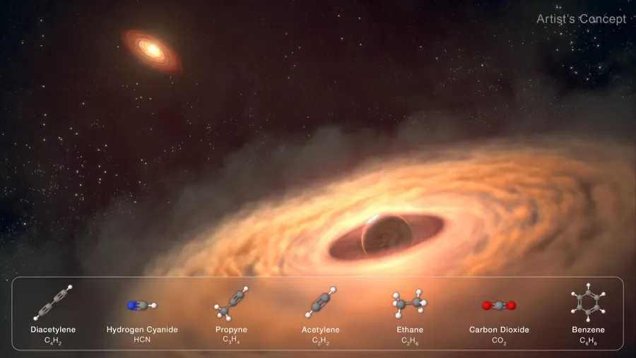

29. September 2025
Webb untersucht mögliche mondbildende Scheibe um CT Cha b
Das James-Webb-Weltraumteleskop hat mit dem Spektrografen seines Instruments MIRI erstmals die chemischen und physikalischen Eigenschaften einer möglichen mondbildenden Scheibe um einen großen Exoplaneten direkt gemessen. Der Planet CT Cha b ist 625 Lichtjahre entfernt und 74 Milliarden Kilometer von seinem nur zwei Millionen Jahre alten Stern getrennt.
In der Scheibe um den Planeten fand das Team sieben kohlenstoffhaltige Moleküle, darunter Acetylen und Benzol. Monde wurden nicht nachgewiesen. Das Bild ist eine künstlerische Darstellung, keine Aufnahme.
Quellen: ESA/Webb: "Webb studies moon-forming disc around massive planet" (weic2521)., 29.09.2025; ESA/Webb: "Illustration of moon-forming disc" (image weic2521a)., 29.09.2025